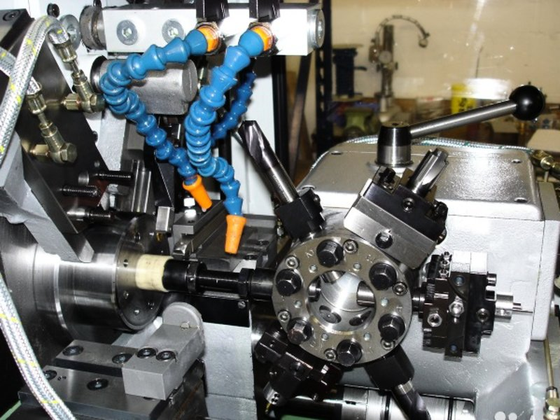
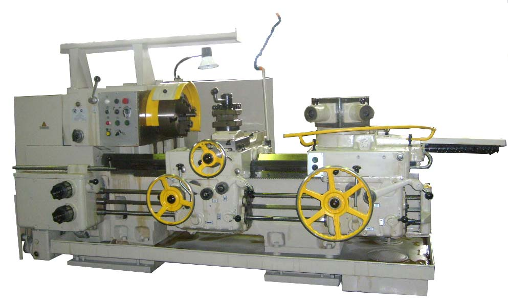
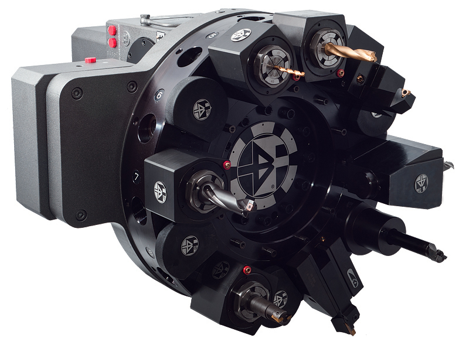
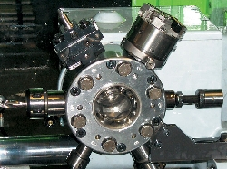
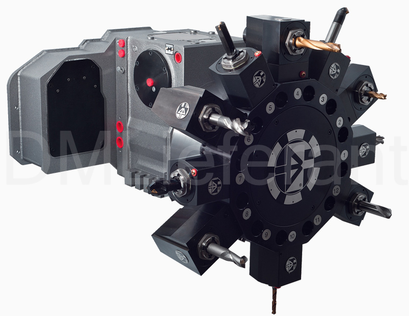
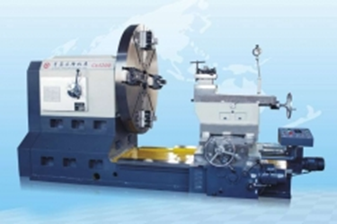
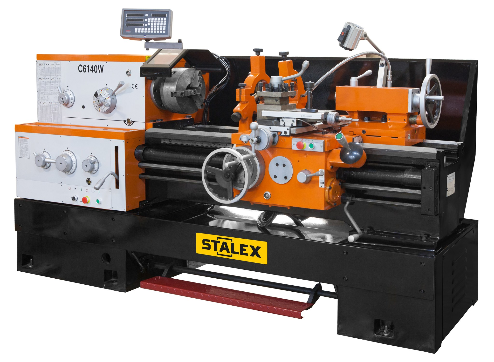

Станки токарной группы
Классификация металлорежущих станков
| Cтанки | Группа | Типы станков | ||||||||
|---|---|---|---|---|---|---|---|---|---|---|
| 1 | 2 | 3 | 4 | 5 | 6 | 7 | 8 | 9 | ||
| Токарные | 1 | Автоматы и полуавтоматы | Револьверные | Сверлильно-отрезные | Карусельные | Токарные и лобовые | Многорезцовые | Специализирован-ные для фасонных изделий | Разные токар-ные | |
| одношпиндельные | многошпиндельные | |||||||||
| Сверлильные и расточные | 2 | Вертикально сверлильные | Одношпиндельные полуавтоматы | Многошпиндельные полуавтоматы | Координатно-расточные | Радиально-сверлильные | Расточные | Алмазно-расточные | Горизонтально-сверлильные | Разные сверлильные |
| Шлифовальные, доводочные | 3 | Кругло шлифовальные | Внутри шлифовальные | Обдирочно шлифовальные | Специализированные шлифовальные | Заточные | Плоскошлифовальные | Притирочные и полировальные | Разные станки, работающие абразивом | |
| Комбинирован ные | 4 | Универсальные | Универсальные | Автоматы | Электрохимические | Электроискровые | Электроэрозионные, ультрозвуковые | Анодно-механические | ||
| Зубо- и резьбо обрабатывающие | 5 | Зубострогальные для цилиндрических колес | Зуборезные для конических колес | Зубофрезерные для цилиндрических колес и шлицевых валов | Зубофрезерные для червячных колес | Для обработки торцов зубьев колес | Резьбо-фрезер-ные | Зубоотделочные | Зубо- и резьбошлифовальные | Разные зубо- и резьбообрабатывающие |
| Фрезерные | 6 | Вертикально-фрезерные консольные | Фрезерные непрерывного действия | Копировальные и гравировальные | Вертикальные бесконсольные | Продольные | Широкоуниверсальные | Горизонтальные консольные | Разные фрезерные | |
| Строгальные, долбёжные, протяжные | 7 | Продольные | Поперечно-строгальные | Долбежные | Протяжные горизонтальные | Протяжные вертикальные | Разные строгальные | |||
| одношпиндельные | многошпиндельные | |||||||||
| Разрезные | 8 | Отрезные | Правильно-отрезные | Пилы | ||||||
| токарные резцом | абразивным кругом | диском | Ленточные | Дисковые | Ножовочные | |||||
| Разные | 9 | Муфто- и трубообрабатывающие | Пилонасекательные | Правильно- и бесцентрово-обдирочные | Для испытания инструмента | Делительные машины | Балансировочные | |||
Классификация токарного оборудования
Классификация токарных станков, которая была разработана еще в советское время, причисляет такие агрегаты к первой категории оборудования, предназначенного для обработки заготовок из металла. Согласно данной классификации, все виды токарных станков причисляются к одной из следующих категорий:
- автоматические и полуавтоматические токарные агрегаты с одним шпинделем
- многошпиндельные станки:
- автомат
- полуавтомат
- револьверные модели
- станки отрезной группы
- карусельные модели
- лобовое и винторезное оборудование
- многорезцовые и полировальные агрегаты
- специализированные станки, которые могут быть обычными и автоматическими
- устройства специального назначения
По степени точности обработки производятся следующие типы токарных станков:
- С — особой точности
- В — высокой точности
- Н — нормальной точности
- А — особо высокой точности
- П — повышенной точности
От того, к какой категории принадлежит токарный станок, зависят его функциональные возможности, и, соответственно, сфера применения. Узнать об основных технических возможностях станка можно и по его маркировке, которая включает в себя следующее:
- начальную цифру «1», свидетельствующую, что это именно токарный станок, а не какой-либо другой;
- вторую цифру, указывающую на тип, к которому относится токарный агрегат;
- третью цифру (а в некоторых моделях и четвертую) — это самый основной параметр станка, который характеризует высоту его центров.
Присутствуют в маркировке таких агрегатов и буквенные обозначения, которые определяют его конструктивные особенности: уровень его автоматизации, точности, модификацию, оснащенность системой ЧПУ. К примеру, маркировка модели токарного станка 1И611П расшифровывается следующим образом: буква «И» говорит о том, что это устройство модернизировано буква «П» — станок повышенной точности; высота центров у данной модели соответствует значению 110 мм.
Одношпиндельные станки
Токарные автоматы и полуавтоматы применяют для обработки деталей сложной конфигурации с помощью большого количества инструментов.
Многошпиндельные станки
Отличительной особенностью многошпиндельных автоматов и полуавтоматов является наличие нескольких одновременно работающих шпинделей.
Горизонтальные многошпиндельные полуавтоматы предназначены для изготовления деталей из прутковых и штучных заготовок.
Одношпиндельные делятся на автоматы продольного точения, фасонно-отрезные и токарно-револьверные.
Многошпиндельные делятся на многорезцовые, копировальные и многорезцовые
Токарно-револьверные
Имеют в наличии револьверную головку
Виды револьверных головок
  Токарные сверлильно-отрезные станки
Применяются для разрезки по длине круглых прутков, валов и труб. резцами.
Токарно-карусельные станки
одностоечный
двухстоечный
Токарно-лобовые
Обеспечивают обработку больших массивных заготовок.
Применяют для обработки деталей типа валов, дисков, втулок и обеспечивают обтачивание, растачивание резцами, обработку торцовых поверхностей, прорезку канавок и отрезку, фасонное точение, сверление, зенкерование и развертывание отверстий, нарезание наружной и внутренней резьб резцами, метчиками и плашками
Многорезцовые
Обработку ведут несколькими резцами одновременно